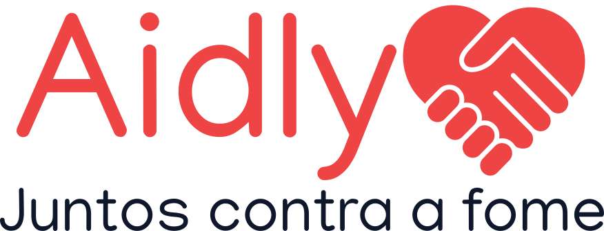

O Aidly é um aplicativo inovador que conecta doadores e associações necessitadas de doações alimentares, utilizando inteligência artificial para otimizar o processo, reduzir custos de transporte e incentivar a solidariedade. Com cadastro e classificação de doadores, o app promove um ambiente colaborativo que estimula a generosidade e o engajamento social. Os usuários podem se cadastrar como doadores individuais ou organizações, melhorando a organização e distribuição dos recursos. Destaca-se a função de ranking dos maiores doadores em cada região, reconhecendo esforços e promovendo uma cultura de generosidade. A inteligência artificial escolhe rotas de entrega eficientes, reduzindo custos logísticos. Os benefícios incluem conexão direta entre doadores e associações, eliminando intermediários. O ranking estimula competição saudável, incentivando doações. A otimização logística maximiza o impacto das doações e o Aidly busca envolver a comunidade em ações solidárias, fortalecendo laços entre os membros através de uma plataforma interativa. O usuário escolhe o tipo de login, podendo ONGs criar solicitações exibidas no app. Doadores podem atender solicitações ou listar doações sem destino pré-definido, promovendo participação ativa na comunidade e contribuindo para a causa solidária.
